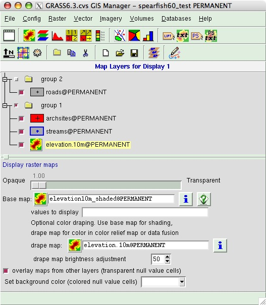
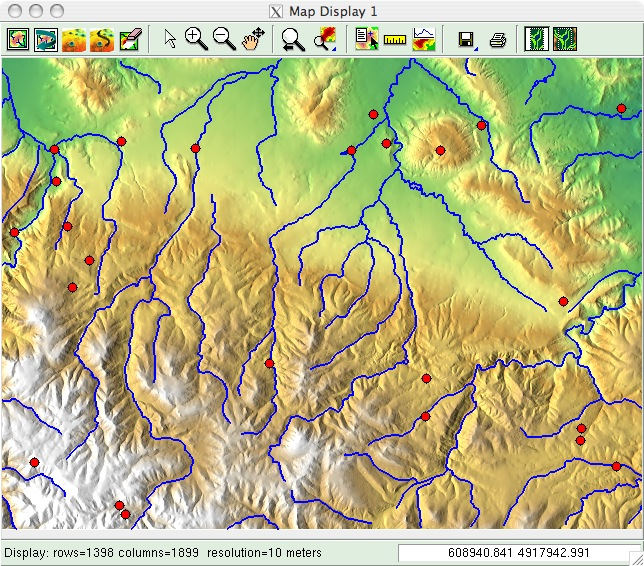
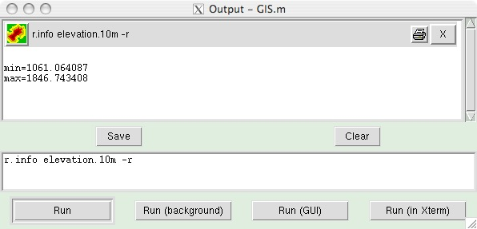

DESCRIPTION
The GRASS GIS Manager
provides an interactive graphical interface to GRASS commands. By
default, it is started automatically with each GRASS session. The GIS
Manager can be quit by selecting the 'File->Exit'
menu item. The GIS Manager can be restarted from the GRASS command line
shell by typing "gis.m".
The GIS Manager includes a set of pull-down menus for all GRASS GIS
functions (analysis, file I/O, GIS configuration and management), two
rows of buttons that manage display layers, an upper window in
which layers to display are organized, and a lower
window which contains options panels for layers in the layer tree.

The top left button opens a new map display window. Each map display
has a unique set of layers to display and region setting (zoom). Other
buttons add layers of different types for display in the selected map
display window. There are additional buttons for saving or opening
group display file, starting XGANIM (display animator) display
interfaces (requires motif), and digitizing. Mouse-over help
is available for all buttons.
Map layers are listed in the window below the
buttons. Layers can include raster and vector maps, text, map
enhancements (scale and north arrow, and grids), and commands
(where any GRASS command be written). Layers are displayed in as arranged
in the layer tree: the bottom layer
is displayed first and the top is displayed last, as if
layers are a series of stacked overlays. Any layer can be
renamed by double clicking on its name and typing a new name.
The check box to the left of each layer makes it active or inactive for display.
Only active layers are displayed/redisplayed when the display button is
pressed. Layers can be organized into groups; entire groups can be
activated or deactivated for display. Groups can be saved to a file and
opened in subsequent sessions, restoring all layers and their display
options.
When a layer is selected with the mouse, its options are shown in the
panel below the layer tree window. Help for each layer type can be
accessed by pressing the GRASS button in the option panel.
Each map display has a unique layer tree and region setting (zoom).
Buttons on each map display manage the map in the display (zoom and
pan), provide tools for query and distance measurement, and exporting
or printing the display. The geographic coordinates under the cursor
are displayed in the indicator window (lower right window frame). It is
important to note that zooming in any display will have NO effect on
the 'computational region' setting (set with g.region). Only by selecting
the "Set current region to match display" item in the zoom menu (in the
map display tool bar) will the current display extents be copied to
the computational region extents.

A separate console window shows all commands issued and all command
output (upper window). GRASS commands (and any other unix/linux
commands) can be run from the console (lower window).

GIS MANAGER BUTTON FUNCTIONS
Top Row
Open new map display
 Open a new map display and resets layer tree.
Open a new map display and resets layer tree.
Add raster layer
 Adds a raster map to the layer tree. Raster display options include:
displaying a selected subset of raster cells, defined by their cat
values; draping (or "fusing") a second map over the base map; and
displaying legends for the base map and draped map. See d.rast and d.his (for draping/fusing).
Adds a raster map to the layer tree. Raster display options include:
displaying a selected subset of raster cells, defined by their cat
values; draping (or "fusing") a second map over the base map; and
displaying legends for the base map and draped map. See d.rast and d.his (for draping/fusing).
Add RGB or HIS raster layer
 Combines and displays three raster maps defined as red, green, and blue
channels; or combines and displays two or three raster maps defined as
hue, intensity, and (optionally) saturation channels. See d.rgb and d.his.
Combines and displays three raster maps defined as red, green, and blue
channels; or combines and displays two or three raster maps defined as
hue, intensity, and (optionally) saturation channels. See d.rgb and d.his.
Add histogram layer
 Adds a layer to display histogram of a raster map or image. See d.histogram.
Adds a layer to display histogram of a raster map or image. See d.histogram.
Add cell values layer
 Adds map of raster cells with cell values printed inside. Only works when <10,000 cells are displayed. See d.rast.num.
Adds map of raster cells with cell values printed inside. Only works when <10,000 cells are displayed. See d.rast.num.
Add raster arrows layer
 Adds map of raster cells with directional arrows drawn. arrow direction
and length determined by separate aspect/directional map and
slope/intensity map. See d.rast.arrow.
Adds map of raster cells with directional arrows drawn. arrow direction
and length determined by separate aspect/directional map and
slope/intensity map. See d.rast.arrow.
Add raster legend
 Adds a legend for a single raster map to the layer tree. Multiple options for formatting the legend are available. See d.legend.
Adds a legend for a single raster map to the layer tree. Multiple options for formatting the legend are available. See d.legend.
Add vector layer
 Adds a vector map to the layer tree. A large number of options are
available for displaying the vector map, including: outline and fill
color, icon type and size for points, line widths for all vector types,
automatic labeling using an attribute column, querying cats or
attributes to limit vectors displayed, and restricting vector display
depending on region size. See d.vect.
Adds a vector map to the layer tree. A large number of options are
available for displaying the vector map, including: outline and fill
color, icon type and size for points, line widths for all vector types,
automatic labeling using an attribute column, querying cats or
attributes to limit vectors displayed, and restricting vector display
depending on region size. See d.vect.
Add thematic map layer (for all vector types)
 Adds layer for thematic display values from a numeric attribute column
associated with a vector map. Options include: thematic display type
(graduated colors or point sizes), methods for creating display
intervals, SQL query of attribute column to limit vector objects to
display, control of point icon types and sizes, control of thematic
color schemes, creation of legend for thematic map, and saving the
results of thematic mapping to a ps.map instructions file for later
printing. See d.vect.thematic.
Adds layer for thematic display values from a numeric attribute column
associated with a vector map. Options include: thematic display type
(graduated colors or point sizes), methods for creating display
intervals, SQL query of attribute column to limit vector objects to
display, control of point icon types and sizes, control of thematic
color schemes, creation of legend for thematic map, and saving the
results of thematic mapping to a ps.map instructions file for later
printing. See d.vect.thematic.
Add thematic charts layer (for vector points)
 Adds layer in which pie or bar charts can be automatically created at
vector point locations. Charts display values from selected
columns in the associated attribute table. Options include: chart type,
layer and attributes to chart, chart colors, and chart size (fixed or
based on attribute column). See d.vect.chart.
Adds layer in which pie or bar charts can be automatically created at
vector point locations. Charts display values from selected
columns in the associated attribute table. Options include: chart type,
layer and attributes to chart, chart colors, and chart size (fixed or
based on attribute column). See d.vect.chart.
Add raster labels layer for vector objects (from existing labels file)
 Add raster text layer from a labels file for vector objects created with v.label
command (accessed from button in options panel). A labels file can also be
created with a text editor.
See d.labels.
Add raster text layer from a labels file for vector objects created with v.label
command (accessed from button in options panel). A labels file can also be
created with a text editor.
See d.labels.
Add text layer
 Adds layer to display a line of text using default GRASS font (selected with d.font). Options include: text placement (screen coordinates); and text size, bolding, and color. See d.text.
Adds layer to display a line of text using default GRASS font (selected with d.font). Options include: text placement (screen coordinates); and text size, bolding, and color. See d.text.
Add postscript labels layer for vector objects (from existing labels file)
 Add postscript text layer from a labels file for vector objects created with v.label
command (accessed from button in options panel). A labels file can also be
created with a text editor.
See d.labels.
Add postscript text layer from a labels file for vector objects created with v.label
command (accessed from button in options panel). A labels file can also be
created with a text editor.
See d.labels.
Add postscript text layer
 Adds layer to display a line of postscript text. Options include: text
placement by coordinates (geographic or screen); text
alignment, font and line spacing; and text size, bolding,
and color.
Adds layer to display a line of postscript text. Options include: text
placement by coordinates (geographic or screen); text
alignment, font and line spacing; and text size, bolding,
and color.
Bottom Row
Add scalebar and north arrow layer
 Adds layer to display a combined scalebar and north arrow. Options
include scalebar placement (using screen coordinates or a mouse),
scalebar format, and scalebar colors. See d.barscale.
Adds layer to display a combined scalebar and north arrow. Options
include scalebar placement (using screen coordinates or a mouse),
scalebar format, and scalebar colors. See d.barscale.
Overlay grids and lines
 Adds layer to display regular grid (for all locations), or geodesic and
rhumblines (for latitude/longitude locations only). Grid options
include: grid and border colors, grid origin, and grid line spacing.
Geodesic and rhumbline options include: line color, and xy coordinates
(geographic) of line endpoints. See d.grid, d.geodesic, and d.rhumbline.
Adds layer to display regular grid (for all locations), or geodesic and
rhumblines (for latitude/longitude locations only). Grid options
include: grid and border colors, grid origin, and grid line spacing.
Geodesic and rhumbline options include: line color, and xy coordinates
(geographic) of line endpoints. See d.grid, d.geodesic, and d.rhumbline.
Add command layer
 Adds a layer in which a GRASS GIS command or command list can be entered. For a command list use the pipe symbol as
"|" as separator.
Adds a layer in which a GRASS GIS command or command list can be entered. For a command list use the pipe symbol as
"|" as separator.
E.g.: d.rast soils | d.rast -o roads | d.vect streams col=blue
Note that when an option of the command contains spaces, you need to escape them with the backslash ('\') character, e.g.:
d.text.freetype text=Population\ density
Add group
 Adds an empty layer group. Layers can then be added to the group.
Adds an empty layer group. Layers can then be added to the group.
Duplicate selected layer or group
 Adds a new layer that duplicates the selected layer.
Adds a new layer that duplicates the selected layer.
Cut selected layer or group
 Deletes the selected group or layer.
Deletes the selected group or layer.
Erase all layers and create a new group
 Removes all layers in the layer tree and creates a new, empty group to which new layers can be added.
Removes all layers in the layer tree and creates a new, empty group to which new layers can be added.
Open an existing group file
 Opens an previously saved group file, containing a set of display layers and their option settings.
Opens an previously saved group file, containing a set of display layers and their option settings.
Save layers to group file
 Saves current set of layers and their options to a group file.
Saves current set of layers and their options to a group file.
Animate raster map series
 Starts the TclTk interactive
interface to display a series of raster maps as an animation. Rasters
can be added individually or as a prefix followed by a sequential
number suffix.
Starts the TclTk interactive
interface to display a series of raster maps as an animation. Rasters
can be added individually or as a prefix followed by a sequential
number suffix.
The suffix in the prefix/suffix format
can be specified as a range of numbers in side parentheses. For
example, "rast(1-50)" will specified maps rast1 through rast 50.
The
suffix also can be specified using Unix-style wildcard matching. For
example "rast[0-9][0-9]" will specify maps rast00 through rast99
inclusive.
Multiple specification forms can be mixed. For
example, you can specify "rast-a,rast-b,rast-(1-50),rast[0-9][0-9]".
This will specify rast-a, rast-b, rast-1 through rast-50, and rast00
through rast99.
Digitize raster or vector maps
 Starts the raster digitizing or vector digitizing module, depending on
whether a raster or vector map is selected. Raster digitizing always
creates a new map. Vector digitizing will either edit an existing map
(if an existing vector map is selected in the layer tree) or create a
new vector map (if the name of the new vector to be created is entered
in the 'vector name' field of the options panel for a vector map
layer). See r.digit and v.digit.
Starts the raster digitizing or vector digitizing module, depending on
whether a raster or vector map is selected. Raster digitizing always
creates a new map. Vector digitizing will either edit an existing map
(if an existing vector map is selected in the layer tree) or create a
new vector map (if the name of the new vector to be created is entered
in the 'vector name' field of the options panel for a vector map
layer). See r.digit and v.digit.
MAP DISPLAY BUTTON FUNCTIONS

Display active layers (current region)
 Displays all active layers at current resolution and region extents for that map display window.
Displays all active layers at current resolution and region extents for that map display window.
Re-render and display all active layers and zoom to current region
 Resets the region to
the resolution and extents to the values set with g.region; forces redisplay and re-rendering
all active layers. See g.region.
Resets the region to
the resolution and extents to the values set with g.region; forces redisplay and re-rendering
all active layers. See g.region.
NVIZ
 Starts the NVIZ, n-dimensional visualization module and interactive
graphical interface. All active raster and vector layers in the layer
tree will be displayed in NVIZ. See nviz.
Starts the NVIZ, n-dimensional visualization module and interactive
graphical interface. All active raster and vector layers in the layer
tree will be displayed in NVIZ. See nviz.
Fly through path for NVIZ
 Starts a GRASS module for interactive creation of a fly-through path to be animated in NVIZ. See d.nviz.
Starts a GRASS module for interactive creation of a fly-through path to be animated in NVIZ. See d.nviz.
Erase to white
 Erases the currently selected monitor to a white background; also removes all frames. See d.erase and d.frame -e.
Erases the currently selected monitor to a white background; also removes all frames. See d.erase and d.frame -e.
Arrow cursor
 Select arrow cursor for map display.
Select arrow cursor for map display.
Zoom in
 Interactive zooming with the mouse in the active display monitor.
Drawing a box with the mouse (left button) and zoom-in cursor causes
the display to zoom in so that the area defined by the box fills the
display. The map resolution is not changed. Clicking with the zoom-in
cursor causes the display to zoom in by 30%, centered on the point
where the mouse is clicked. Zooming resets the display region extents (both
size and location of area
displayed). It does NOT affect the computational region for other GIS processes.See g.region.
Interactive zooming with the mouse in the active display monitor.
Drawing a box with the mouse (left button) and zoom-in cursor causes
the display to zoom in so that the area defined by the box fills the
display. The map resolution is not changed. Clicking with the zoom-in
cursor causes the display to zoom in by 30%, centered on the point
where the mouse is clicked. Zooming resets the display region extents (both
size and location of area
displayed). It does NOT affect the computational region for other GIS processes.See g.region.
Zoom out
 Interactive zooming with the mouse in the active display monitor.
Drawing a box with the mouse (left button) and zoom-out cursor causes the display to
zoom in so that the area displayed shrinks to fill the area defined by the box. The map
resolution is not changed. Clicking with the zoom-out cursor causes the
display to zoom out by 30%, centered on the point where the mouse is
clicked. Zooming resets the display region extents (both size and location of
area
displayed). It does NOT affect the computational region for other GIS processes.See g.region.
Interactive zooming with the mouse in the active display monitor.
Drawing a box with the mouse (left button) and zoom-out cursor causes the display to
zoom in so that the area displayed shrinks to fill the area defined by the box. The map
resolution is not changed. Clicking with the zoom-out cursor causes the
display to zoom out by 30%, centered on the point where the mouse is
clicked. Zooming resets the display region extents (both size and location of
area
displayed). It does NOT affect the computational region for other GIS processes.See g.region.
Pan
 Interactive selection of a new
center of view in the active display monitor. Drag the pan cursor while
pressing the left mouse button to pan. Panning changes the
location of the region displayed but not the size of the area displayed
or the resolution. Panning does NOT affect the computational region for other GIS processes. See g.region.
Interactive selection of a new
center of view in the active display monitor. Drag the pan cursor while
pressing the left mouse button to pan. Panning changes the
location of the region displayed but not the size of the area displayed
or the resolution. Panning does NOT affect the computational region for other GIS processes. See g.region.
Zoom back
 Return to previous zoom. Up to 5 levels of zoom back are maintained.
See g.region.
Return to previous zoom. Up to 5 levels of zoom back are maintained.
See g.region.
Zoom menu
 Automatic zoom settings menu. Zoom to match the extents of a selected
map or to match the extents of a saved region; save the current extents to a named region file;
zoom to match the computational region (set with g.region) or to match the default region;
set computational region (WIND file) to match the current display extents (does not change
resolution).See g.region.
Automatic zoom settings menu. Zoom to match the extents of a selected
map or to match the extents of a saved region; save the current extents to a named region file;
zoom to match the computational region (set with g.region) or to match the default region;
set computational region (WIND file) to match the current display extents (does not change
resolution).See g.region.
Query (select map first)
 Query selected raster (only the base map of a draped map will be
queried), RGB raster map (all three map channels will be queried), or
vector map using the mouse. A map must be
selected before query.
Vector charts and thematic vector maps cannot be queried. The
results of the query will be displayed in the console window. See r.what and v.what.
Query selected raster (only the base map of a draped map will be
queried), RGB raster map (all three map channels will be queried), or
vector map using the mouse. A map must be
selected before query.
Vector charts and thematic vector maps cannot be queried. The
results of the query will be displayed in the console window. See r.what and v.what.
Measure lengths
 Interactive measurement of lengths defined with the mouse. The length
of each segment and the cumulative length of all segments measuered is
displayed in the console window. Lengths are
measured in the current measurement unit. See also d.measure.
Interactive measurement of lengths defined with the mouse. The length
of each segment and the cumulative length of all segments measuered is
displayed in the console window. Lengths are
measured in the current measurement unit. See also d.measure.
Profile
 Interactively create profile of a raster map. Profile transect
is drawn with the mouse in map display. The profile may be of the displayed map or a different
map.See g.region.
Interactively create profile of a raster map. Profile transect
is drawn with the mouse in map display. The profile may be of the displayed map or a different
map.See g.region.
Print map
 Prints map on lpr printer or postscript device; saves visible map
display (including postscript text and labels) to PDF or EPS file.
Requires ghostscript for all output except EPS.
Prints map on lpr printer or postscript device; saves visible map
display (including postscript text and labels) to PDF or EPS file.
Requires ghostscript for all output except EPS.
Export map display
Exports visible map display to
different raster graphic formats. Exported map does not include
postscript text or postscript labels.
Strict draw mode
 Selects strict draw mode. In
strict mode the aspect ratio and resolution from the last zoom are used
when drawing the maps. The map will show only the area and resolution
selected. It will not usually fill the screen. Strict mode only shows
what is asked for.
Selects strict draw mode. In
strict mode the aspect ratio and resolution from the last zoom are used
when drawing the maps. The map will show only the area and resolution
selected. It will not usually fill the screen. Strict mode only shows
what is asked for.
Explore draw mode
 Selects explore draw mode. In
explore mode the region from the last zoom is expanded to fill the
entire screen. The resolution is adjusted to match the screen
resolution. Explore mode shows as much as possible.
Selects explore draw mode. In
explore mode the region from the last zoom is expanded to fill the
entire screen. The resolution is adjusted to match the screen
resolution. Explore mode shows as much as possible.
Configuration: changing fonts
Fonts used in gis.m can be changed as follows:
- Source code: edit file 'lib/gtcltk/options.tcl' and compile gtcltk
- Runtime: edit file '$GISBASE/etc/gtcltk/options.tcl'
SEE ALSO
gis.m: GEORECTIFY TOOL
gis.m: PROFILE TOOL
gis.m: ANIMATE TOOL
AUTHORS
Michael Barton, Arizona State University, Tempe, Arizona, USA
Cedric Shock, USA
Last changed: $Date$